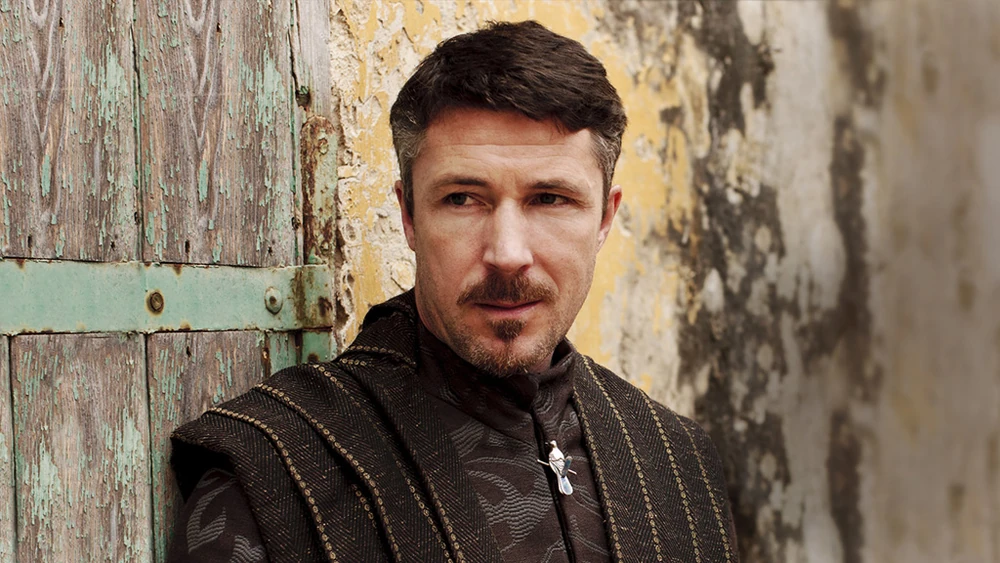

Petyr Baelish llegó al mundo con todo en contra: hijo de un señor menor de Los Dedos, criado como pupilo en Aguasdulces por favor ajeno, enamorado de una mujer que nunca lo quiso y humillado por un Stark antes incluso de que la serie comenzara. Ese origen lo explica todo. El resentimiento no lo consumió — lo forjó. Cada burdel, cada traición, cada escalón trepado fue la respuesta de un hombre que entendió antes que nadie que las reglas del juego las escriben los que tienen espada y cuna, y que él nunca tendría ninguna de las dos... a menos que cambiara las reglas.
En sus mejores temporadas — la primera y la segunda — Meñique es puro teatro de manipulación. La escena con Cersei en la que pronuncia "knowledge is power" y la reina ordena cortarle el cuello antes de rectificar en el último segundo es uno de los momentos más tensos de toda la serie: un hombre sin ejército ni sangre noble mirando a los ojos a la Reina Regente y no parpadeando. Su rivalidad con Varys funciona porque son dos versiones del mismo arquetipo — el poder desde la sombra — con filosofías opuestas: Varys cree en el reino, Meñique solo cree en la escalera. La frase del caos no es un pozo sino una escalera, pronunciada en la temporada 3, es su manifiesto completo. Y hasta ese punto la serie lo sostiene: cada movimiento tiene lógica, cada traición tiene un porqué, cada sacrificio — Ros entregada a Joffrey, Jon Arryn envenenado, Ned Stark condenado — encaja en un tablero que solo él puede leer. Es el arquitecto invisible de la Guerra de los Cinco Reyes y casi nadie lo sabe.
A partir de la temporada 5 el personaje empieza a romperse, y no por decisión propia sino por las costuras del guion. Casar a Sansa con Ramsay Bolton es un movimiento que ningún Meñique de las temporadas anteriores habría hecho jamás: demasiado riesgo, demasiada dependencia en que una chica sola en territorio enemigo pueda vengarse sin ayuda. Y la temporada 7 lo entierra: el maestro del engaño que durante seis años no dejó que nadie leyera sus cartas pasa media temporada en Invernalia siendo leído por tres Stark, uno de los cuales es literalmente un oráculo.
Muere de rodillas, suplicando, degollado con su propia daga. Un final que cierra el círculo en lo simbólico pero que traiciona todo lo que el personaje había construido. Como escribió Varys: era el hombre más peligroso del reino. Se merecía una caída a su altura.